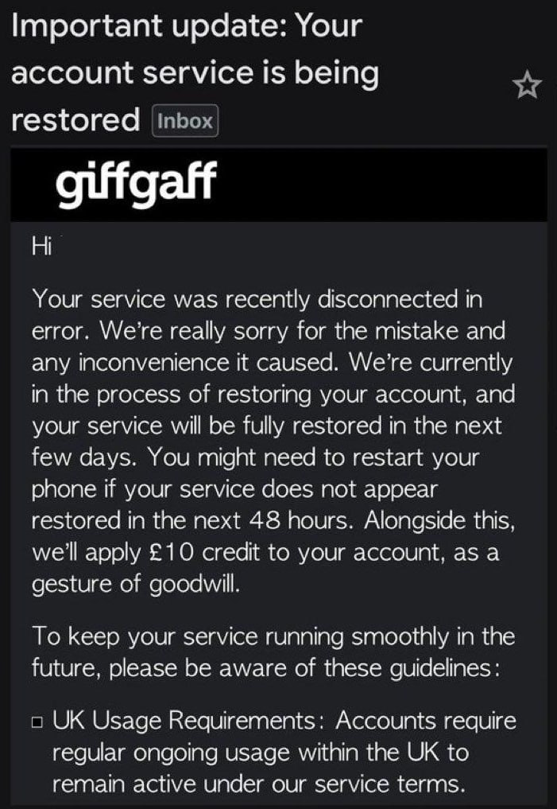

猫弦ACT *🍥
@maoxianACT
我都换完Cte了你再跑过来滑跪，吃相怎么这么难看，giffgaff你都这样了谁还敢用你手机卡🤣

奶昔🥤
@realNyarime
根据多个消息来源（未验证），Giffgaff 貌似已滑跪
正在逐步发邮件通知此前为误封而解封，如果你之前被封号，可以在这两天看看邮件或登录账号查看有没有打赢复活赛解封
合理猜测原因是最近 Communication Ombudsman 开始正式受理退款仲裁申请，大量的CASE压力给到了 giffgaff 这边了 https://t.co/JiU7CH3apL https://t.co/3VAqTJ3lqi